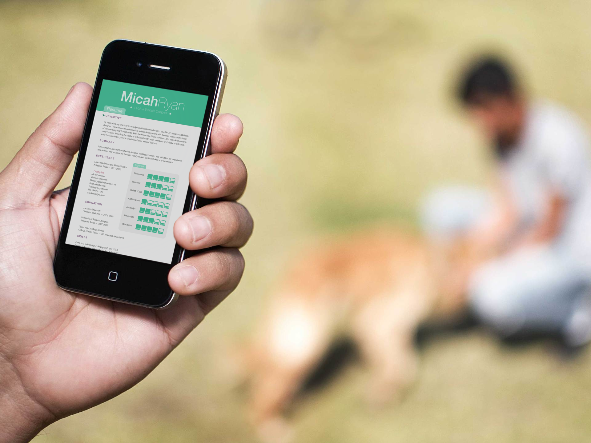

-

I created my resume with a monochromatic color harmony using a color that indicated freshness.
{kind=link}
Resume Design
I have been blessed to receive many opportunities, and I am extremely thankful for the people, and companies that work with me to create designs and interactions. And, I mainly get into the door with my resume which I designed myself in Adobe Illustrator. The resume design has often been one of the discussion points during interviews I've had.
Resume Icons
Computer icons were created to indicate the level of expertise of each skill.
Why design your resume?
I knew I needed to set myself apart from the hundreds of applicants whose resumes would come across my future employer's desk. If my resume got lost in the pile of, then I did not do my job creating an experience with my resume.
With that thought in mind - I created a resume that included icons designed by myself, a layout that allowed for easy reading a retained optimal white space and that was easy accessible by creating a web page specifically for the resume PDF.
{kind=link}